В прошлом году на сайте Antibiotic.ru была размещена статья «Подарки от пациентов: что в Вашем кармане? (разговоры врачей)». В преддверии этого Нового года хотелось бы остановиться на теме «Подарки с медицинской тематикой» и попытаться ответить на вопрос, смогут ли пациенты удивить врачей…
В прошлом году на сайте Antibiotic.ru была размещена статья «Подарки от пациентов: что в Вашем кармане? (разговоры врачей)». В преддверии этого Нового года хотелось бы остановиться на теме «Подарки с медицинской тематикой» и попытаться ответить на вопрос, смогут ли пациенты удивить врачей…
Все мы прекрасно знаем, что главное в подарках — не их стоимость, а внимание к интересам того, кому Вы делаете подарок. Что же подарить…
…инфекционисту:
В магазине на Etsy.com продаются вышитые крестиком картинки с самыми разнообразными микроорганизмами — бактериями, вирусами, грибами (автор — Alicia Watkins). А что, идея! Очень неплохо на кухне или в ординаторской инфекционного отделения будут смотреться гонококки, пневмококки, вирус герпеса, кори или лихорадки Эбола или микобактерия туберкулеза… Симпатичная компания!
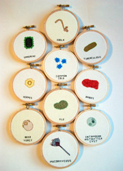 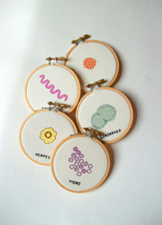 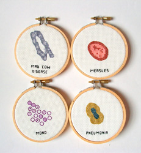
Ещё один вариант подарка для инфекциониста — плюшевые микробы. Плюшевые микробы появились в 2002 г. благодаря выпускнику Гарварда Дрю Оливер, который решил, что увеличенный в миллионы раз и сшитый из яркого искусственного меха микроорганизм выглядит безобидно и забавно. Согласитесь, что плюшевый микроб «Простуда» (риновирус) как оригинальный и не избитый подарок заболевшему другу — то, что нужно!
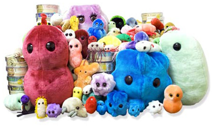
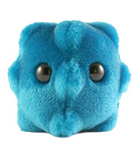
Риновирус
А дерматовенерологу можно подарить плюшевый «букет» из хламидии, бледной трепонемы, вируса герпеса и гонококка.
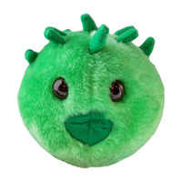
Хламидия
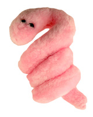
Бледная трепонема
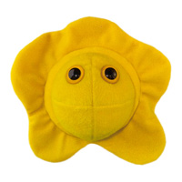
Вирус герпеса
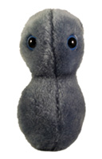
Гонококк
…акушеру-гинекологу и не только:
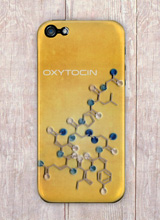 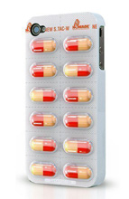 В век разнообразных мобильных устройств гаджеты для них являются универсальными и востребованными подарками. Так почему бы не подарить любимому(ой) акушеру-гинекологу чехол для iPhone 5 с молекулой окситоцина — «гормона благополучия, счастья, доверия, внутреннего покоя и тишины».
Для подарка фармацевту или клиническому фармакологу подойдёт чехол для iPhone 4/4S «Упаковка таблеток».
Клиническому фармакологу можно подарить красно-белые капсулы плацебо, способные вылечить любую болезнь с вероятностью до 19%, ведь главное — верить, что чудо-лекарство обязательно поможет!
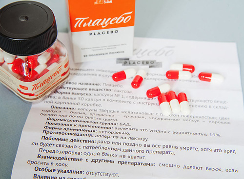
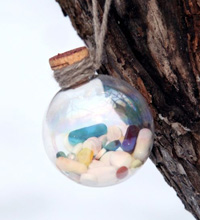 Необычный шар «Панацея» служит не только лекарством от всех болезней, но и прекрасным новогодним подарком для всех врачей. Наполненный разноцветными яркими таблетками и капсулами, этот шар отлично смотрится как на ёлке, так и на рабочем столе.
…анестезиологу-реаниматологу, неврологу, преподавателю медицинского ВУЗа, психиатру:
Украшения — одни из самых распространённых и популярных подарков. А если украшение (например, кулон) ещё и несёт в себе глубинный смысл? Например, невролог или преподаватель медицинского ВУЗа по достоинству оценит кулон в форме молекулы ацетилхолина, психиатр — серотонина, а анестезиолог-реаниматолог — допамина.
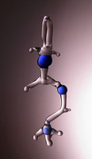
Ацетилхолин
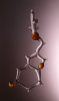
Серотонин
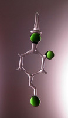
Допамин
…врачу-генетику:
Кабинет медико-генетического консультирования, несомненно, украсит ДНК-портрет его хозяина. Уже появились компании, предлагающие инновационный способ выражения индивидуальности — размещение профиля ДНК человека на холсте. По выделенной из слюны заказчика ДНК создаются уникальные ДНК-портреты, в основе которых лежит последовательность ДНК и генетический код заказчика, причём рамку, цветовую гамму и размер портрета можно заказать любой.
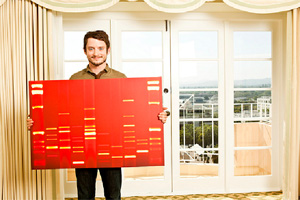
…патологоанатому и судебному медику:
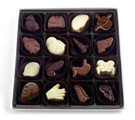 Несмотря на тот факт, что конфеты — более, чем просто банальный подарок для врача любой специальности, шоколад в форме органов человека может удивить доктора и вновь вернуть интерес к сладкому, ведь надо сравнить, отличаются ли по вкусу лёгкие и позвонок и печень из молочного шоколада и сердце и ушная раковина из тёмного…
Ещё один вариант подарка специалисту в области анатомии — анатомический разборный мишка, который представляет собой своеобразную объёмную головоломку, которая поможет вспомнить анатомию.
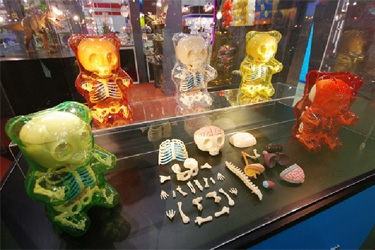
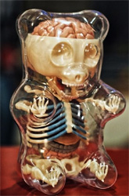
…неврологу:
Мыло в форме мозга может иметь двойной смысл: с одной стороны, это может означать пожелание, чтобы разум всегда оставался чистым, а с другой стороны, может, это намёк на «промывку мозгов»?
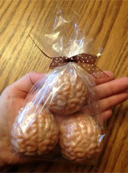
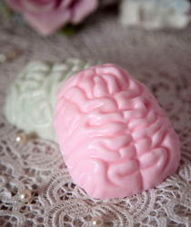
Подводя итог, стоит заметить, что эти подарки вряд ли смогут особенно удивить доктора, но вызвать у него улыбку — вполне. Впрочем, большинство врачей лучшим подарком считают спокойный вечер в кругу друзей и близких, не нарушаемый вызовами к тяжёлым пациентам. Так что желаем нашим пациентам не хворать, и от всей души поздравляем всех посетителей нашего сайта с Новым Годом!!! Дорогие коллеги, желаем Вам крепкого здоровья, оптимизма, счастья и успехов, признания и достойного вознаграждения за Ваш нелёгкий труд!
Коллектив сайта ANTIBIOTIC.ru